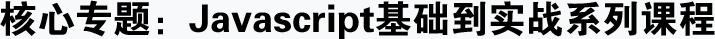
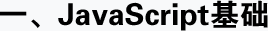
-
1.认识javaScript 获取元素 改变内容 事件 函数 this简单认识 定义变量
- 学前准备
- JS代码写在哪里?
- JS注释
- 学习方法
- 写JS代码需要注意什么
- 获取元素以及修改内容
- 初始JavaScript(JS)
- JS里的系统弹窗代码
- JS里的事件
- 方法/函数
- this的简单认识
- 定义变量
-
2.操作属性 操作样式 数据类型
- 操作标签属性
- JS数据类型
- + 号的初步认识
- if switch判断语句
- 操作css样式
- []的初步认识
-
3.循环 自定义属性运用
- for循环
- break/continue
- while
-
4.运算符 类型转换
- 算术运算符
- 位运算符
- 赋值运算符
- 显式类型转换
- 比较运算符
- 隐式类型转换
- 逻辑运算符 &&
- Math方法
-
5.函数参数传递
- 函数分类
- 参数
- return
- undefined return与break/continue区别
-
6.js解析顺序和作用域
- javascript解析顺序
- 执行
- 定义
- 作用域
-
7.字符串和数组方法
- 字符串方法
- 数组方法
-
8.json 和 call,apply,bind
- json对象
- 创建对象,对象存在的意义
- 读取对象的属性,方法,以及增删改
- 对象的解析for in JSON.parse()、JSON.stringify()
- 简单实现jq中css,html功能
- call,apply,bind
-
9.定时器 Math数学函数
- 定时器
- 定时器参数
- 数学函数
- Math.sin(弧度),Math.cos(弧度)
-
10.日期对象
- 日期对象data 创建一个时间点 new Data()等更多参数
- Date.parse(),Date.UTC()
- 几种日期格式化方法
- 关于日期的方法
- getTimezoneOffset
-
11.速度运动框架
- 速度运动框架
- 时间版运动Tween.js
项目截图：


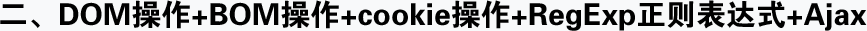
-
1.DOM操作
- dom简介、dom结构、querySelector、querySelectorAll
- offsetWidth,clientWidth,scrollWidth(height同理)
- node节点类型
- offsetTop,offsetLeft,offsetParent
- node属性常用操作
- 可视区大小滚动高度
- 常用的方法
-
2.BOM操作
- BOM(Brower Object Model)核心对象window
- 表单中的操作
- event事件对象
- 事件绑定
- 滚轮事件
- 事件冒泡
- 键盘事件
- 阻止浏览器默认事件
- window其他的补充
-
3.cookie操作
- 什么是cookie
- setCookie(key,value,time)
- 存储/获取cookie
- removeCookie(key)
- 封装方法 getCookie(key)
-
4.正则表达式
- 什么是正则表达式
- 量词
- 创建正则表达式常用方法
- 贪婪和惰性
- String中正则表达式方法
- 子集
- 标识符
- replace应用
-
5.Ajax
- 什么是ajax
- Ajax封装
- 本地服务器环境的搭建
- 简单实例运用
- HTTP状态码 status属性返回值所代表的意思
- jsonp
- Ajax工作流程及代码、创建ajax对象、open方法、send方法、最终接受
- jQuery里面的ajax
项目截图：
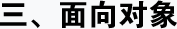
-
1.面向对象(上)
- 什么叫面向对象 面向过程、面向对象、两者区别
- 构造函数 什么叫构造函数、什么是工厂模式
- 原型prototype
- 实例：面向对象写轮播
-
2.面向对象(中)
- 方法链
- 包装对象
- 原型链
- 原型的默认属性和方法
- 继承的方式、类继承、复制继承、对象继承、更多继承方式
-
3.面向对象(下)
- 闭包 什么叫闭包、闭包有什么特点
- 递归 什么是递归、哪些时候会用递归
- 如何开发插件
-
4.面向对象实战
- 开发类似jquery类库插件(8节课)
- 推箱子游戏(3节)
- 打飞机游戏(3节)
项目截图：
- 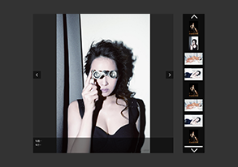
- 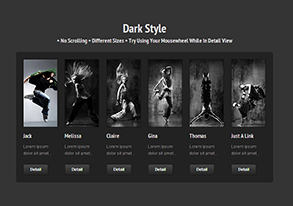
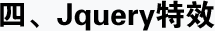
-
1.jquery基础语法
- 认识jQuery、下载jQuery、引入的注意事项
- JQ获取元素、￥符号详解、各种选择器的介绍
- jQ操作元素内容、html方法、text方法、val方法
- JQ操作元素样式、css方法、设置样式、设置读个央视、获取样式
-
2.JQ对象和JS对象
- JQ对象和JS对象、什么叫JQ对象、什么叫JS对象
- JQ对象和JS对象的互相转换、get方法
- JQ序列号相关、eq方法、index方法
- JQ里面事件的写法 mouseover......
-
3.元素操作
- 遍历每个元素、each方法
- JQ操作标签属性、prop方法、attr方法
- 对class名的操作、添加类名、移除类名、切换类名
-
4.jQ动画特效
- JQ的显示隐藏相关动画
- JQ动画:animate函数详解、stop方法
-
5.元素属性操作
- 各种宽高/距离方法
- scrollTop方法、offset方法、position方法
-
6.元素节点操作
- 关于节点的操作
- JQ动画:animate函数详解、stop方法
-
7.jquery高级运用
- delayfangf、extend的运用、map方法、Ajax相关方法
项目截图：
- 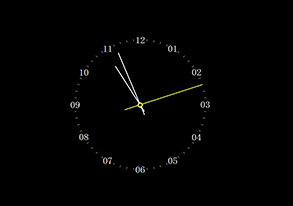
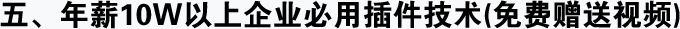
-
1.gulp 代码自动化压缩工具
- Gulp是什么
- 获取gulp
- 使用seajs入口文件、task、读写文件、watch、globs、插件
- github 代码版本管理器
-
2.require.js 国外-js模块化管理工具
- 了解和获取require js
- 使用require js data-main属性、require方法、定义模块
-
3.sea.js 阿里-js模块化管理工具
- sea的作用
- 模块开发好处
- 了解和获取seajs
- seajs引入jquery
- 使用seajs use方法、define方法
- 模块别名、目录别名
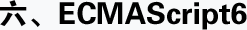
-
1.ECMAScript6简介
- ECMAScript 和 javaScript 的关系
- ES6 与 ECMAScript 2015 的关系
- ECMAScript 的历史
- 部署进度
- Babel 转码器
- Traceur 转码器
-
2.Left和const命令
- left 命令
- 块级作用域
- const 命令
- 顶层对象的属性
- global 对象
-
3.变量的解析赋值
- 数组的解构赋值
- 对象的解构赋值
- 字符串的解构赋值
- 数值和布尔值的解构赋值
- 函数参数的解构赋值
- 圆括号问题
- 用途
-
4.字符串的拓展
- 字符 Unicode 表示法
- repeat()
- codePointAt()
- padStart()，padEnd()
- String.fromCodePoint()
- 模板字符串
- 字符串的遍历器接口
- 实例:模板编译
- at()
- 标签模板
- normalize()
- String.raw()
- includes(),startsWith()
- 模板字符串的限制
-
5.正则的拓展
- RegExp 构造函数
- 字符串的正则方法
- u 修饰符
- y 修饰符
- sticky 属性
- flags 属性
- s 修饰符:dotALL 模式
- 后行断言
- Unicode 属性类
- 具名组匹配
-
6.数值的拓展
- 二进制和八进制表示法
- Number.isFinite(),Number.isNaN()
- Number.parseInt(),Number.parseFloat()
- Number.isInteger()
- Number.EPSILON
- 安全整数和Number.isSafeInteger()
- Math对象的扩展
- Math.signbit()
- 指数运算符
- Integer 数据类型
-
7.函数的拓展
- 函数参数的默认值
- rest 参数
- 严格模式
- name 属性
- 箭头函数
- 绑定 this
- 尾调用优化
- 函数参数的尾逗号
-
8.对象的拓展
- 扩展运算符
- Array.from()
- Array.of()
- 数组实例的 copyWithin()
- 数组实例的 find() 和 findIndex()
- 数组实例的 fill()
- 数组实例的 entries()，keys() 和 values()
- 数组实例的 includes()
- 数值的空位
-
9.Symbol
- 概述
- 作为属性名的 Symbol
- 实例:消除魔术字符串
- 属性名的遍历
- Symbol.for(),Symbol.keyFor()
- 实例:模块的 Singleton 模式
- 内置的Symbol值
-
10.Set和Map数据结构
- Set
- WeakSet
- Map
- WeakMap
-
11.Proxy
- 概述
- Proxy 实例的方法
- Proxy.revocable()
- this 问题
- 实例:Web 服务的客户端
-
12.Reflect
- 概述
- 静态方法
- 实例:使用 Proxy实现观察者模式
-
13.Promise对象
- Promise 的含义
- Promise.reject()
- 基本用法
- 两个有用的附加方法
- Promise.prototype.then()
- 应用
- Promise.prototype.catch()
- Promise.try()
- Promise.all()
- Promise.resolve()
- Promise.race()
-
14.Iterator 和for...of 循环
- Iterator(遍历器)的概念
- 默认 Iterator 接口
- 调用 Iterator 接口的场合
- 字符串 Iterator 接口
- Iterator接口与Generator函数
- 遍历器对象的return(),throw()
- for...of循环
-
15.Generator函数的语法
- 简介
- yield* 表达式
- next方法的参数
- for...of循环
- 作为对象属性的Generator函数
- Generator函数的this
- Generator.prototype.throw()
- 含义
- Generator.prototype.return()
- 应用
-
16.Generator函数的异步应用
- 传统方法
- 基本概念
- Generator 函数
- Thunk 函数
- co 模块
-
17.async函数
- 含义
- 基本用法
- 语法
- async 函数的实现原理
- 与其他异步处理方法的比较
- 实例:按顺序完成异步操作
- 异步遍历器
-
18.Class的基本用法
- 简介
- 私有属性
- 严格模式
- this 的指向
- constructor 方法
- name 属性
- 类的实例对象
- Class 的取值函数和存值函数
- Class 表达式
- Class 的Generator 方法
- 不存在变量提升
- Class 的静态方法
- 私有方法
- Class 的静态属性和实例属性
- new.target属性
-
19.Class的继承
- 简介
- Object.getPrototypeOf()
- super 关键字
- 类的prototype属性和__proto__属性
- 原生构造函数的继承
- Mixin模式的实现
-
20.Decorator
- 类的修饰
- 方法的修饰
- 为什么修饰器不能用于函数?
- core-decorators.js
- 使用修饰器实现自动发布事件
- Mixin
- Trait
- Babel转码器的支持
-
21.Module的语法
- 概述
- export default命令
- 严格模式
- 模块的整体加载
- export 命令
- 模块的继承
- import 命令
- 跨模块常量
- export 与 import 的复合写法
- import()
-
22.Module的加载实现
- 浏览器加载
- ES6模块与CommonJS模块的差异
- Node 加载
- 循环加载
- ES6模块的转码
-
23.ArrayBuffer
- DataView视图
- SharedArrayBuffer
- 复合视图
- ArrayBuffer 对象
- Atomics 对象
- 二进制数组的应用
- TypedArray视图
项目截图：
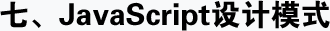
-
1.学习设计模式的准备
- js面向对象回顾
- 什么是设计模式
- 为什么我们要学习设计模式
- 设计模式的分类
-
2.创建型设计模式
- 单例模式
- 原型模式
- 简单工厂模式
- 创建者模式
- 工厂方法模式
- 抽象工厂模式
-
3.创建型设计模式
- 装饰者模式
- 适配器模式
- 外观模式
- 享元模式
- 代理模式
-
4.行为型设计模式
- 迭代器模式
- 观察者模式
- 中介者模式
- 策略模式
- 访问者模式
- 命令模式
-
5.技巧性设计模式
- 委托模式
- 数据访问对象模式
- 节流模式
- 参与者模式
- 等待者模式
-
6.架构型设计模式
- 同步模块模式
- MVP模式
- 异步模块模式
- MVVM模式
- MVC模式
项目截图：
- 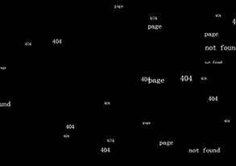